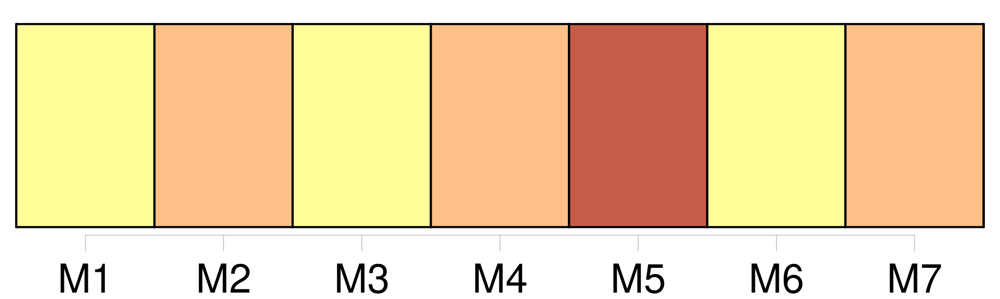

Longueur nb maillons : 20 mentions |
  |
Huitième semaine [3 phrases] [L'OTAN] a annoncé hier qu' [elle] allait encore intensifier [ses] bombardements sur la Yougoslavie malgré le risque de tuer des civils albanais du Kosovo qui pourraient être utilisés comme boucliers humains.
Les Occidentaux ont évoqué avec une insistance croissante, sans fournir de preuves concluantes, la possibilité que des « boucliers humains » soient employés par les forces serbes, par exemple à Korisa, le village du Kosovo où un bombardement de [l'OTAN] a fait des dizaines de victimes civiles. « [Nous] prévoyons d'intensifier la campagne aérienne afin d'atteindre de manière encore plus efficace les forces au sol », a déclaré à Tirana le commandant suprême des forces de l'OTAN en Europe, le général américain Wesley Clark.
« [Nous] savons que les boucliers humains constituent un danger bien réel partout au Kosovo », mais « [nous] avons une grande confiance dans [notre] processus d'établissement des cibles ».
Boucliers humains : l'interrogation Mais [l'Alliance] reconnaît qu' [elle] n'est pas en mesure de confirmer avec certitude un tel recours, indiquant tenir [ses] informations surtout de témoignages de réfugiés. « Ce que [nous] savons, c'est qu'ils étaient dans les collines. [1 phrases] « [Nous] avons vu des militaires y entrer et en sortir et des véhicules militaires dans le parking. D'après les observations et d'autres renseignements, [nous] pensions qu'il était utilisé par les militaires et la police spéciale », a-t -il poursuivi.
« Cela doit [nous] inciter à mieux cibler [nos] attaques ». |
La ressource peut être téléchargée sur la page Ortolang
Si vous avez des questions ou vous voyez des erreurs, merci d'envoyer un mail à silvia.federzoni89@gmail.com
Site développé par S. Federzoni (contact)